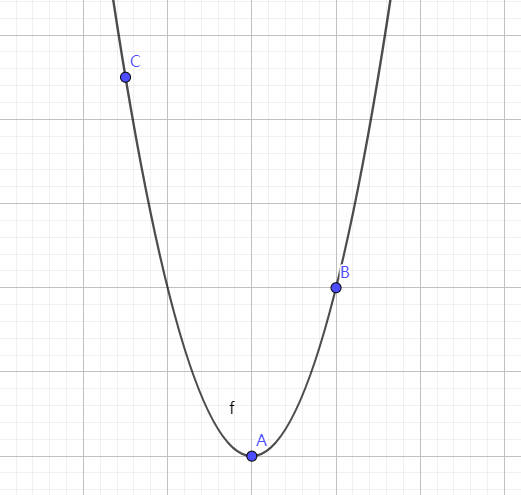
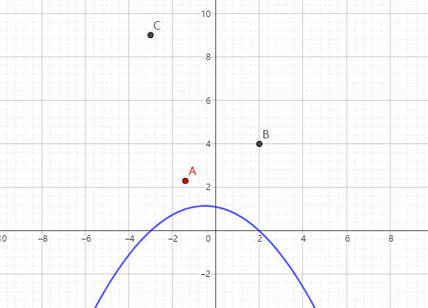
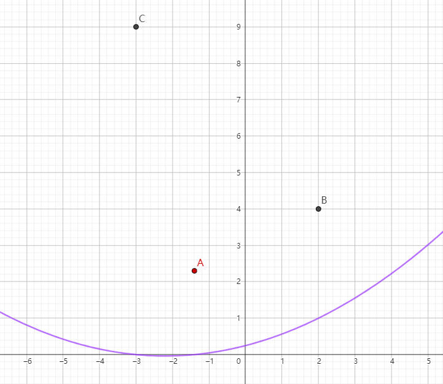
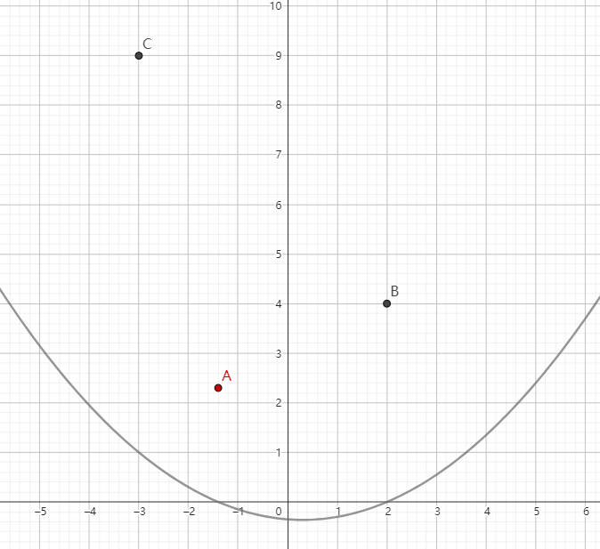
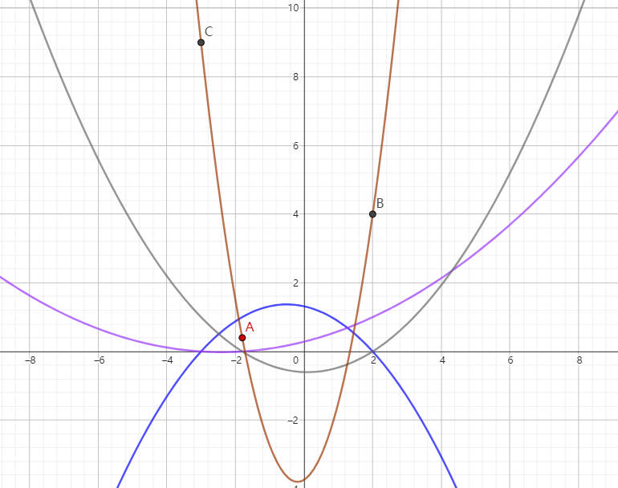
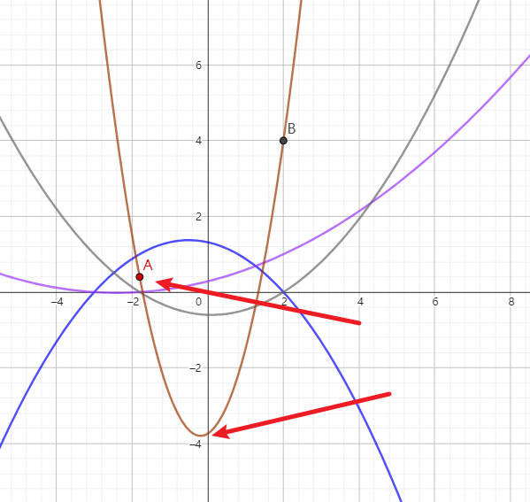

拉格朗日插值法 #
在前一篇文章介绍了艾特肯算法，本节继续介绍另一种曲线插值算法，拉格朗日插值法（Lagrange interpolatoion）。
算法思想 #

可以在这里互动体验拉格朗日插值法：拉格朗日插值法。
本节内容以平面曲线为例，假设有三个点 (x1,y1),(x2,y2),(x3,y3)，我们希望能够获得一条曲线能够通过这三个点，假设这条曲线的多项式为：
y=a+bx+cx2将三个点带入上面的二次多项式得到：
y1=a+bx1+cx12y2=a+bx2+cx22y3=a+bx3+cx32显然我们可以通过上面的三个方程组，求得 a,b,c 的值，但是这种方法这并不是本篇文章的重点，重点是如何用拉格朗日法求曲线。
那么拉格朗日是如何思考这个问题的？首先要明确的是要计算的曲线一定是一个二次曲线，拉格朗日希望通过三根二次曲线的合并得到目标曲线。
第一根曲线在 x1 点处取值为 1，在 x2 和 x3 时取值为 0。

第二根曲线在 x2 点取值为 1，在 x1 和 x3 处取值为 0。

第三根曲线在 x3 点取值为 1，在 x1 和 x2 处取值为 0。

假设这三根曲线方程记为 fi(x)，则有以下推论成立。
- y1f1(x) 经过 (x1,y1)，且在 (x2,y2) 和 (x3,y3) 处为 0。
- y2f2(x) 经过 (x2,y2)，且在 (x1,y1) 和 (x3,y3) 处为 0。
- y3f3(x) 经过 (x3,y3)，且在 (x1,y1) 和 (x2,y2) 处为 0。
将上述三个曲线 yifi(x) 合并即可求得最终经过三个点的曲线。
f(x)=y1f1(x)+y2f2(x)+y3f3(x)这就是拉格朗日的核心思想。
那么 fi(x) 应该是一个什么样的方程？ fi(x) 必须满足如下条件：
fi(xj)={1i=j0i=j构造 f_1(x) 的方程如下，很显然可以满足上述条件：
f1(x)=(x1−x2)(x1−x3)(x−x2)(x−x3)推导到一般情况，fi(x) 的方程如下：
fi(x)=j=i∏1≤j≤3xi−xjx−xj最终能够得到拉格朗日插值公式：
f(x)=i=1∑3yifi(x)
拉格朗日插值法和艾特肯算法一样，也出现了“失控”的点，不能很好的控制曲线的形状。

所以建模一般很少采用这种曲线算法。
（完）